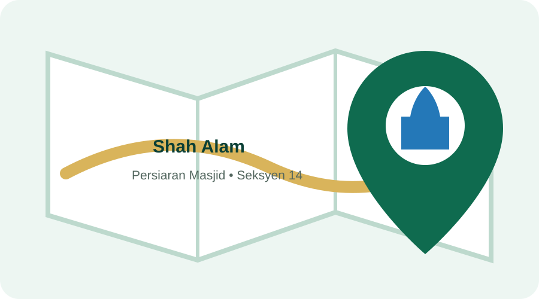

Masjid & Office Location
Find the PERKIM Selangor office at the Shah Alam state mosque and distinguish its contact details from the mosque management office.

PERKIM Bahagian Negeri Selangor
Masjid Sultan Salahuddin Abdul Aziz Shah, Persiaran Masjid, 40000 Shah Alam, Selangor Darul Ehsan.
Tel: 03-5512 1450
Fax: 03-5512 1420
Masjid Sultan Salahuddin Abdul Aziz Shah
The mosque management website lists its office at Tingkat 1, Dewan Syarahan dan Muzakarah Islam, Persiaran Masjid, Seksyen 14, 40000 Shah Alam.
03-5523 8006
Selangor's state mosque
JAKIM's mosque portal identifies Masjid Sultan Salahuddin Abdul Aziz Shah as the Selangor state mosque. It was officially inaugurated on 11 March 1988.
- Commonly known as Shah Alam's Blue Mosque.
- Located at Persiaran Masjid in Shah Alam.
- The PERKIM Selangor office uses the mosque address.
- PERKIM and mosque management have different telephone numbers and functions.
Sources: JAKIM Portal Masjid ↗ , official mosque website ↗ and PERKIM Selangor contact page ↗ .
Planning an office visit?
Call PERKIM Selangor first to confirm office availability and the correct meeting point.